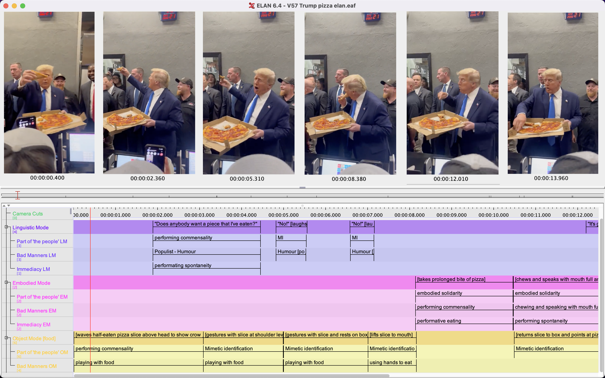
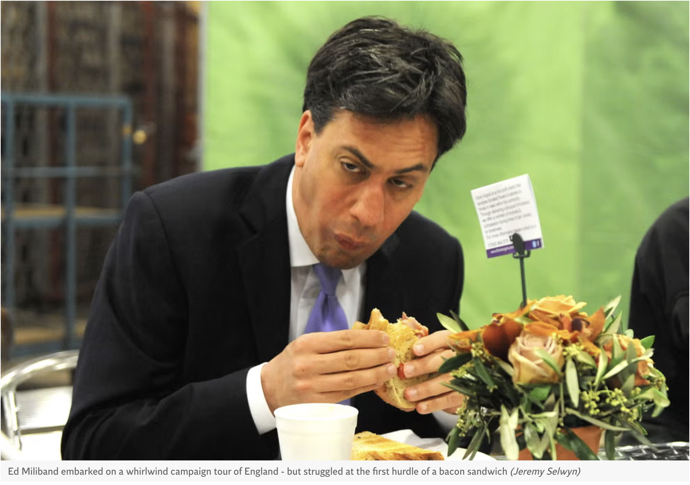
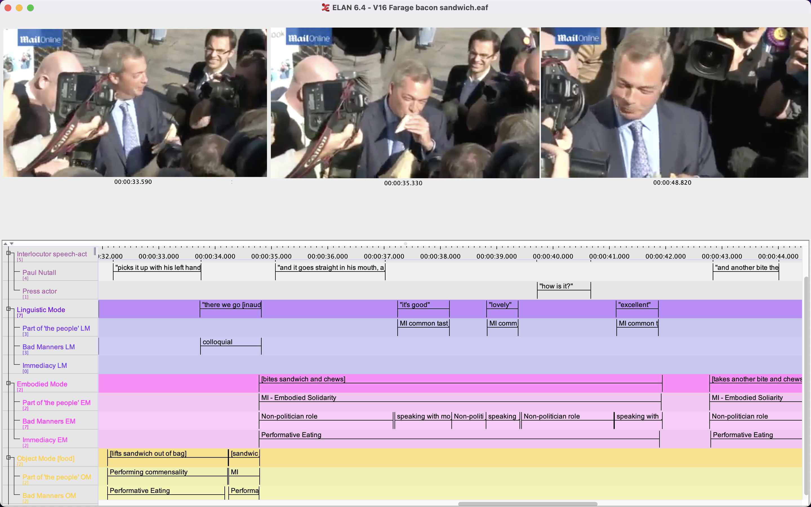
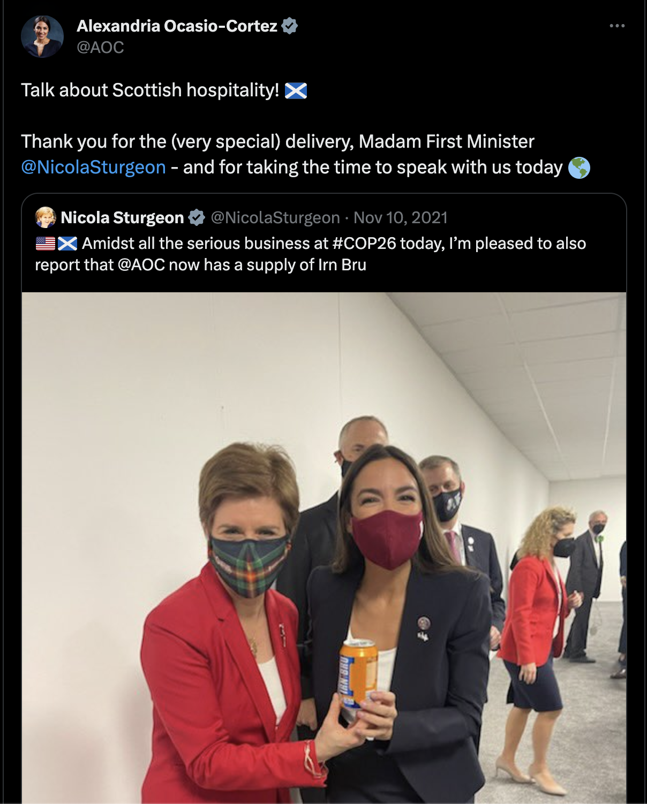
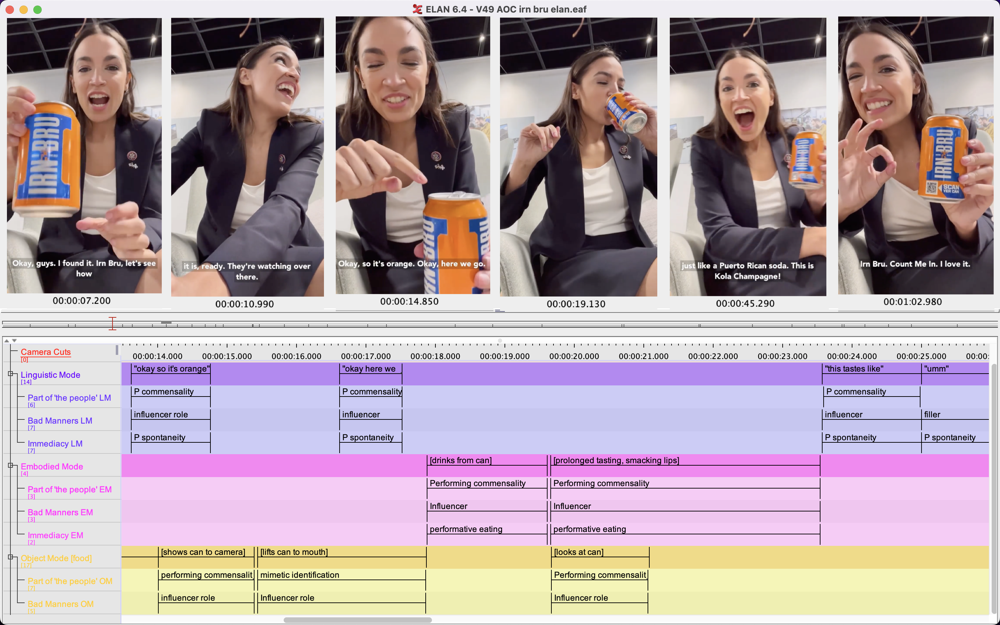
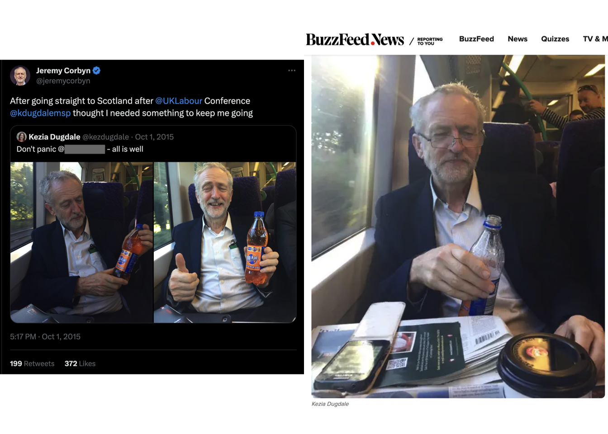
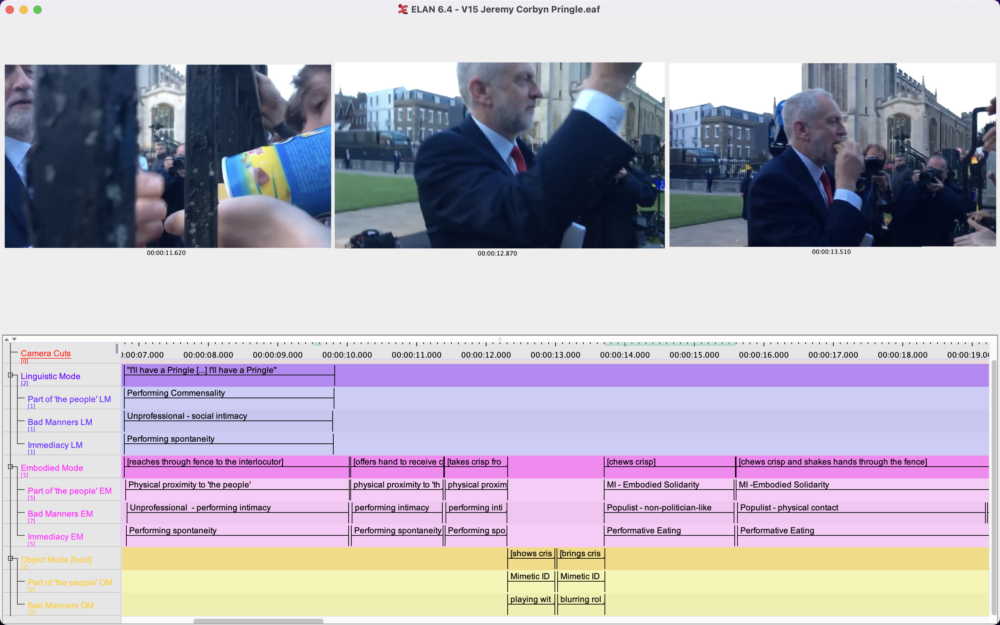

7 Performative Eating: Multimodal Social Semiotics Timeline Transcripts
7.1 Introduction
This chapter examines the communicative power of performative eating, which is “consuming food as a form of entertainment” (Hai-Jew, 2022, p267). In such events, gastropopulism’s features are mutually reinforcing, fostering cohesive multimodal performances. Performative eating inherently entails populist bad manners by centring the actor’s non-politician roles and making a public spectacle of private tastes (Moffitt, 2016, p44). This is often supplemented with culturally-situated bad manners like open-mouthed chewing or speaking with a full mouth (Rüdiger, 2021, p23). The politainment aspect imbues such performances with spontaneity, as actors can interact with food and the audience in seemingly unplanned ways (Rüdiger, 2021, p17). The actual incorporation of food allows actors to embody their belonging with the people, egged on by enthusiastic observers, becoming more powerful when the actors perform commensality by sharing food with the audience (Diehl, 2017, p12). Accordingly, performative eating is highly conducive to gastropopulist performances of authenticity, intimacy, and spontaneity to construct and legitimise a political actor’s public identity. This is compounded by the intrinsic individuality of performative eating, whereby each actor “communicates unique messages about themselves, their relationship to food, [and] their relationship to the audience” (Hai-Jew, 2022, p291). This chapter dissects how each actor leverages individual communicative modes and features of gastropopulism through performative eating.
7.2 Trump
Figure 7.1: Trump Performative Eating MMSSTT [V57, 22/04/23]

I have asserted that Trump is able to ride the wave of his gastropopulist identity in his gastropopulist performances. However, performative eating is still a powerful tool for Trump to legitimise his public identity. V57 [22/04/23] is one of a series of short videos of Trump at a Floridian pizza parlour with a throng of supporters, security staff, and press actors. In these various videos, he says to the cashier “I wanna take care of all the people here” (V56, ‘money where his mouth is’) and hands out pizza slices (V52). In V52, which directly leads into V57, Trump hands a pizza slice to an audience member, before picking up another and taking a big, prolonged bite as the audience cheers. In the 15-second long V57, Trump waves the half-eaten slice above and around his head [0:00-0:05], asking, “Does anybody want a piece that I’ve eaten?” [0:02-0:04] as the crowd cheers. He laughs and repeats, “No!” twice [0:04; 0:06] before taking another awkward bite of the seemingly chewy pizza [0:08-0:10]. He chews with his mouth open and speaks with his mouth full, declaring, “it’s good” [0:10-0:14]. Native New Yorker that he is, he folds the slice. Trump’s consumption is a spectacle, egged on by the crowd’s uproarious cheers with each bite.
While we have previously seen Trump voice the working class affinity of his personal taste (Individual Timelines; Exclusionary Nationalism; Class), in V57 he embodies this class solidarity by actually eating the pizza he bought for his people. Accordingly, the performed commensality in V57 of handing slices to crowd members and eating ‘with’ them, as well as joking about his fans wanting his half-eaten slice, intensifies the performed authenticity, intimacy, and spontaneity of Trump’s gastropopulist performance. The food-mode presents the pizza as a prop that makes tangible Trump’s belonging with ‘the people’ (embodied solidarity, commensality, physical proximity), bad manners (open-mouth chewing, speaking with mouth full, unhygienic food-handling), and immediacy (‘spontaneous’ jokes and movements). As such, this is an excellent example of the power of performative eating to legitimise a (gastro)populist identity, whilst seeming natural and apolitical.
7.3 Farage
Figure 7.2: Miliband Bacon Sandwich [21/05/2014]

Figure 7.3: Farage Performative Eating MMSSTT [V16, 03/10/2014]

V16 [03/10/2014] shows Farage during a by-election campaign performatively eating a bacon sandwich, accompanied by his then-deputy leader Paul Nuttall and surrounded by press actors. V16 was distributed by the Daily Mail (2014). Farage’s performance was motivated by a widely circulated (and ridiculed) May 2014 photograph of Labour’s then-leader Ed Miliband caught awkwardly eating a bacon sandwich, included above (Ruck, 2014). Returning to the statistical analysis chapter’s discussion of incorporation, Miliband’s photograph exemplifies why in gastropopulist performances, still images overwhelmingly imply rather than actualise incorporation. The shot’s photographer, Jeremy Selwyn, stated it was unplanned (Selwyn, 2014). Conversely, Farage’s recreation was a carefully orchestrated PR stunt, enabling Farage to self-present an idealised performance (Goffman, 1959, p30).
In V16, Farage uses a local catering van to signify informality and working class belonging. As the group stand at the van’s hatch, Farage asks Nuttall, “What’ve you roped me into here?” and they laugh together [0:10-0:15], performing spontaneity for the planned event. Farage’s food- and body-acts of lifting and then taking the first bite of the sandwich are temporally aligned with Nuttall’s narration of how Miliband ate the sandwich [0:32-0:42]. Nuttall’s role as the architect of the event serves to hide the carefully arranged nature of Farage’s performance in plain sight by making fun of ‘elite’ politicians who need to be prompted by their team for even the most basic human activities, such as eating a sandwich. This positions Farage’s engagement as spontaneous and silly. As such, Nuttall’s presence strengthens the credibility of Farage’s performance (Rüdiger, 2021, p23).
Farage’s body-acts of bites are purposeful and large [0:35; 0:43]. Here, he avoids a potential unflattering struggle to bite through the fat and embraces the embodied solidarity of eating this cheap, unhealthy food. The speech-acts of “it’s good”, “lovely” and “excellent” [0:37; 0:39; 0:41] as Farage chews perform his common taste with the people and informal bad manners. As the MMSSTT shows, the audiovisual format enables Farage to layer the features of gastropopulism throughout his communicative modes to deliver a cohesive performance. Towards the end, he appears smug as he chews and looks around at the cameras encircling him [0:46-0:50]. By turning eating into a newsworthy spectacle, Farage’s performance is highly effective at embodying his gastropopulist identity whilst distancing himself from the ‘incompetent’ and ‘inauthentic’ political elite.
7.4 AOC
Figure 7.4: AOC, Sturgeon, and Irn Bru [P1, 10/11/2021]

Figure 7.5: AOC Performative Eating MMSSTT [V49, 10/11/2021]

The selected example of AOC’s performative eating epitomises her everyday influencer celebrity role, with V49 boasting 2.25 million views. During COP26 Climate Change Conference, held in Glasgow, Scotland, AOC complained via social media that she was unable to find any Irn Bru — a very popular Scottish soft drink. P1 [10/11/2021] shows (then) First Minister of Scotland Nicola Sturgeon presenting AOC with an Irn Bru can. Later that day, AOC posted V49, a 1:06-long video of her first taste of Irn Bru. The reaction-style format is common for online cross-cultural eating performances, enabling performed spontaneity through expressive ‘surprised’ reactions and showing AOC’s appetite for trying unfamiliar, local gastronomy — however this is delicate as negative reactions can easily be perceived as disrespectful or prejudiced (Hai-Jew, 2022, p271). Regardless, AOC wants to “immediately” share her first taste with her social media audience, her enthusiasm performing spontaneity and urgency as well as intimacy and belonging.
During V49, AOC presents the can to the camera five times [0:02-0:07; 0:14-0:15; 0:38-0:43; 0:45-0:47; 1:00-1:06], yet takes only two sips [0:17-0:19; 0:52-0:55]. This is typical of online eating performances, as the ‘eater’ often does multiple takes, so typically limits their consumption. This is a reminder that gastropopulist eating performances are performances for an audience, rather than natural candid experiences (Hai-Jew, 2022, p293). Through these repeated actions, AOC performs commensality and thereby demonstrates her belonging with ‘the people’. AOC’s offscreen in-person audience act as a silent sounding board, as she turns to them after tasting, saying “this tastes like umm [2s pause, claps] this tastes like the Latino soda ah Kola Champagne? […] I don’t know where it comes from, I don’t know if it’s Dominican or Puerto Rican” [0:23-0:38]. She then turns back to the camera and immediately exclaims “This tastes just like a Puerto Rican soooodaaaaa! This is Kola Champagne!” [0:38.5-0:44] as she presents the can to the camera and repeatedly taps its side [0:38-0:43]. In total, she makes four references to Kola Champagne [0:31; 0:34; 0:46; 1:00]
AOC acts delighted that her cross-cultural eating adventure has unexpectedly returned her to her Puerto Rican roots, discovering shared tastes between Scotland and Latin America. She repeats “I love it” [0:51; 0:52; 1:04]. Her enthusiastic repetitions in each communicative mode (“Kola Champagne” and “I love it”; sipping; presenting the can to the camera) harness multimodality in impression management. In V49’s Instagram caption, she states, “[…] Upon further tasting, it’s not EXACTLY like Kola Champagne […] I was so shocked at having something in Glasgow that tasted like HOME 🇵🇷 however Irn Bru is also very unique on its own […]”. This further supports the performed spontaneity of AOC’s enthusiastic reaction in the video. This gastropopulist performance is congruent with AOC’s wider inclusionary politics that celebrate cultural interactions. Without saying anything explicitly ‘political’, AOC has leveraged food using an established online performer reaction format to perform: authenticity of her public identity; intimacy with her audience; spontaneity and informality. This demonstrates how AOC artfully leverages her ‘everyday influencer’ celebrity role in gastropopulist performances to legitimise her public identity.
7.5 Corbyn
Approximately a year following the narrowly-rejected Scottish Independence Referendum, 5 months after Labour held only one Scottish seat in the 2015 General Election (Mitchell, 2015, p97), and 2 weeks after becoming Labour leader, Corbyn was also presented with an opportunity for Irn Bru-based gastropopulism during his inaugural visit to Scotland. On 01/10/2015, Buzzfeed journalist Jamie Ross offered Corbyn a can of Irn Bru, which Corbyn rejected with a slightly confused, “No thanks.” [CNG2] (Ross, 2015). Later that day, the (then) Scottish Labour leader, Kezia Dugdale, tweeted some photos of Corbyn with a bottle of Irn Bru [P2a; P2b] (@kezdugdale, 01/10/2015; Ross, 2015).
Figure 7.6: Corbyn Rejects Irn Bru [CNG2, 01/10/2015]
Figure 7.7: Corbyn Accepts Irn Bru [P2a, P2b, 01/10/2015]

While the Tweet of a happy Corbyn with the unopened bottle remain on Dugdale’s Twitter [P2a] (@kezdugdale, 01/10/2015), the unhappy/opened Tweet [P2b] has been deleted without comment, leaving only an echo in the Buzzfeed article. A public figure rejecting food/drink from a stranger is reasonable. However, the inherent Scottishness of Irn Bru infused the interaction with semiotic weight regarding the highly salient issue of English and Scottish cultural identity and taste, a test which Corbyn clearly failed. Corbyn’s attempts to gain control over the narrative were clumsy — in P2a, he poses examining the bottle, before giving a sloppy thumbs up and smile, holding the still-unopened bottle. In P2b, Corbyn does not look like the Irn Bru helped to “keep [him] going”, not helped by Dugdale’s commentary that he said, “It’s like nothing I’ve ever tasted” (Ross, 2015). Though understandable, the initial rejection pierced the performed spontaneity and authenticity of the subsequent Irn Bru posts, resulting in unconvincing gastropopulist performances. It is interesting to compare the rejected Irn Bru to Corbyn accepting a Pringle on the campaign trail in Cambridge, the week before the 2017 General Election [V15, 31/05/2017].
Figure 7.8: Corbyn Performative Eating MMSSTT [V15, 31/05/2017]

Figure 7.8 shows Corbyn performing commensality. An off-screen male voice offers Corbyn a Pringle [0:06], which he accepts with the simultaneous speech-act, “I’ll have a Pringle [pause] I’ll have a Pringle” and body-act of reaching through the fence and taking the crisp [0:07-0:12]. This performs commensality and intimacy with the people, interacting as a friend rather than a politician. Corbyn raises the crisp so the crowd can see, before bringing it to his mouth to eat, drawing attention to his mimetic identification performance [0:12-0:14]. It is effective; the audience cheer as he lifts the crisp, continuing to variously cheer, laugh, and chant “Jeremy” as he chews. His brisk chewing continues as he uses the crisp-hand to shake outstretched hands through the fence [0:14-0:23], briefly speaking with his mouth full as he says “thank you” to an audience member [0:19]. This demonstrates his embodied solidarity and intimacy with the audience, with whom he unhesitatingly shares food and physical contact. Though the thick black iron fence is a physical boundary between Corbyn and his people, he performs breaking through to physically connect with them, in doing so performing shared tastes and his non-politicianlike identity (Diehl, 2017, p13). Corbyn’s gastropopulist Pringle performance choreographs communicative modes to foster perceptions of authenticity, intimacy, and spontaneity, to which the audience enthusiastically respond. As the Irn Bru day shows, immediacy is often a vital element of legitimising gastropopulist performances and naturally cannot be recaptured. Potentially, Corbyn learnt from his Irn Bru refusal to understand the politics of performative eating, becoming more confident in his celebrity politician role and interacting with ‘fans’ as an effective impression management strategy.
7.6 Discussion
Ultimately, akin to Hai-Jew’s (2022, p284) research, this chapter demonstrates the complexity, dimensionality, and nuance of performative eating. This illustrates how the actors’ distinct and unique public identities (and their constitutive roles) provide particular affordances and restraints to their eating performances, which then feed back into the perceived authenticity of their public identities. Performative eating is highly conducive to impression management, as its structure entails cohesive integration of individual communicative modes and gastropopulist features. The layout of MMSSTT harnesses multimodal communication to dissect this structure and provide a rich analysis of why performative eating is so effective for delivering convincing gastropopulist performances. This highlights the communicative power of non-linguistic modes; the actors actually say very little in these videos, including AOC’s simple repetitions. In performative eating, the bulk of the impression management is exerted through the body and food modes, which are often overlooked and therefore appear ‘natural’ or ‘authentic’. As such, I position performative eating as the most powerful way for political actors to use multimodal gastropopulist performances when constructing and legitimising their public identities. The final chapter is a reflection on the theory, methodological frameworks, and arguments advanced in this dissertation.